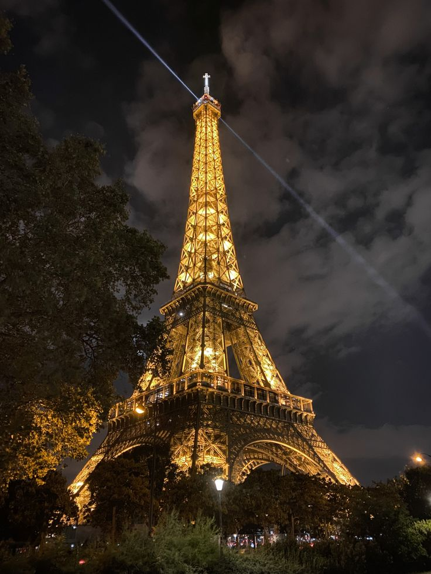

Naše preporuke
Italija – Zemlja umetnosti, istorije i gastronomije
Dobrodošli u Italiju, zemlju koja svaku posetu pretvara u remek-delo! Lutajte ulicama Rima i divite se čudu Koloseuma, Pantheona i Vatikana. Otkrijte romantične kanale Venecije, šetajte renesansnim ulicama Firence ili uživajte u sunčanim pejzažima Toskane. Ljubitelji hrane će se zaljubiti u autentične italijanske pice, paste i gelato, dok vinogradi Chianti i prosecco regiona nude savršene trenutke uživanja.

Francuska – Zemlja romantike, kulture i sofisticiranog stila
Francuska je mesto gde svaki trenutak odiše elegancijom. Pariz, grad svetlosti, mami svojom ikoničnom Ajfelovom kulom, Luvrom i živopisnim ulicama Montmartra. Zaljubljenici u prirodu mogu istražiti prostrane vinograde Bordoa, živopisnu Provansu sa poljima lavande ili spektakularnu obalu Azurne obale.
Španija – Zemlja ritma, sunca i strasti
Dobrodošli u Španiju, zemlju koja pleše u ritmu flamenka! Počnite svoje putovanje u Barseloni, gde arhitektura Antonija Gaudija ostavlja bez daha. Otkrijte živopisne ulice Madrida, ili uživajte u čarima Sevilje, rodnog mesta flamenka i koride.